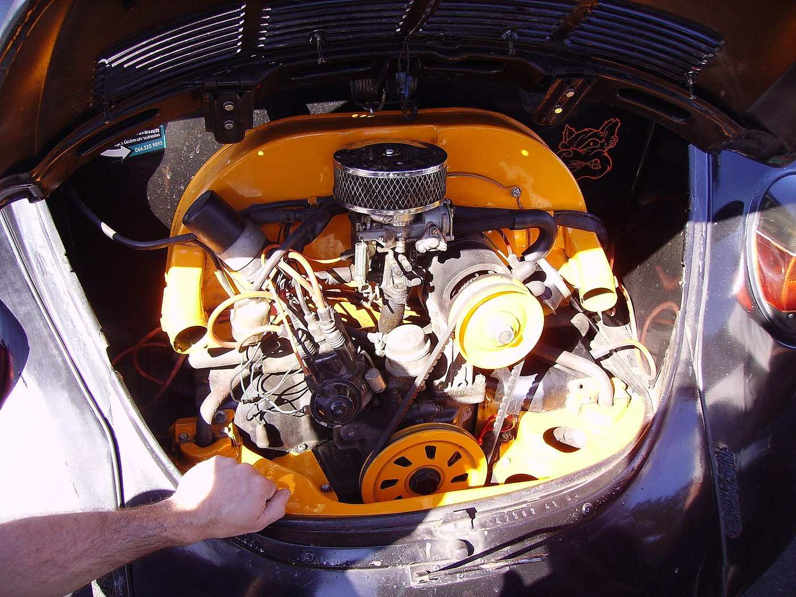
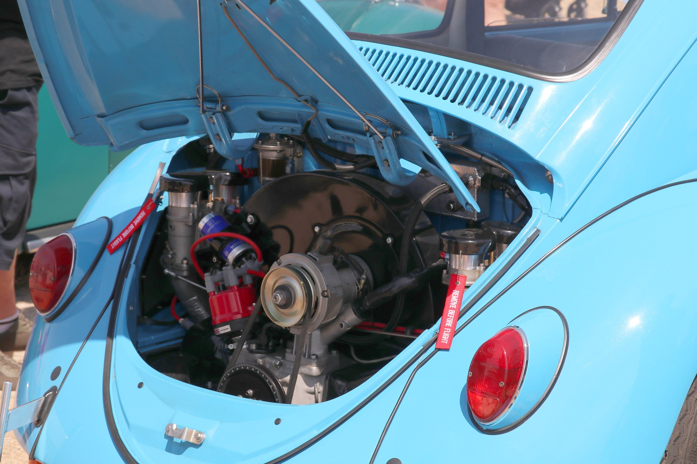

Heros Custom
Cap. 2 — Anatomia do motor boxer a ar
Não publicar — sem site até OK Founder — tinware P0 primário AUR1500 + Coccinelle; 1965AVI terciária P1 opcional (dupla pode ser aftermarket); prefixo/correia P0 (label BD); tinware incompleto AUSENTE; stamp B AUSENTE
Cap. 2 — Anatomia do motor boxer a ar
Neste capítulo você reconhece o motor boxer a ar do Fusca Type 1: ventoinha, correia, latas (tinware), aletas e o óleo que também tira calor. É aula — o que você vai apontar no motor. Elétrica não entra neste capítulo. Sem site até OK Founder.
- Plataforma
- Type 1 só
- Arquitetura
- Boxer a ar · comando no bloco
- Ignição clássica
- 1-4-3-2
- Códigos neste PDF
- B / BF / BH / BB / BD · Itamar
- Refrigeração
- Aletas + fluxo forçado
- Estado
- rascunho 0.2 · Não publicar
Palavras deste capítulo: tinware / latas = chapas que obrigam o ar a passar nas aletas. prefixo = letra de família no bloco (ex.: BD). aletas = nervuras que largam calor. evidência = foto + o que você aponta (não «parece»).
1. O que é o motor do Type 1
O quê Nesta aula você vai reconhecer o boxer a ar: ventoinha, correia, latas (tinware), aletas e o óleo como agente térmico.
Objetivo do aluno Reconhecer boxer a ar: ventoinha, correia, latas (tinware), aletas, óleo como agente térmico.
Por quê Sem lata o ar foge e o motor superaquece. Sem correia a ventoinha para. Óleo baixo também deixa o motor quente.
Como Apontar no motor: ventoinha e correia; latas (tinware) completas; aletas limpas; óleo no nível.
Quatro cilindros opostos (boxer), comando no bloco, refrigerado a ar — sem radiador de água. Motor atrás, tração traseira, plataforma. Isso é o que define o Type 1 neste curso. Origem (KdF / Porsche / Wolfsburg) fica no Cap. 1; aqui o motor é o objeto.
O que você vai apontar no motor:
- ventoinha e correia;
- conjunto completo de latas (tinware);
- aletas limpas em cilindros e cabeçotes;
- óleo no nível (o óleo também é agente térmico).
Cheque — como saber se deu certo Você aponta ventoinha, uma lata que fecha o fluxo, aletas e sabe que o óleo também tira calor.
Erro comum Mito: «é ar = não precisa de lata». Correção: sem tinware o fluxo foge; o motor superaquece.
Evidência tipada Bay completo nas fotos mais à frente (AUR / Coccinelle). Legenda: «latas no lugar».
Exercício Na ponte mais abaixo, escreva: aponte no bay prefixo · ventoinha/correia · 1 lata que fecha o fluxo · aletas.
Próximo Quando estiver pronto, vá para o Bloco B — prefixo no bloco.
1b. Conceito (arquitetura, não mito)
O boxer a ar do Type 1 não é “um motor qualquer com ventoinha”. Três escolhas travam o resto deste curso:
- Opostos — quatro cilindros em dois bancos horizontais. Ordem de ignição clássica: 1-4-3-2.
- Ar — calor sai por aletas + fluxo forçado. Sem lata, o fluxo foge; sem correia, a ventoinha para.
- Óleo — lubrifica e tira calor. Nível baixo ou sujeira nas aletas = os dois problemas crônicos (superaquecimento e vazamento).
Cilindrada no carro hoje pode não ser a de fábrica. Data o carro pela ficha D1; o motor pela foto do prefixo no bloco.
1c. Funcionamento (o que o ar faz)
O quê Nesta aula você vai dizer em uma frase: correia → ventoinha → latas → aletas; e que o óleo lubrifica e tira calor.
Objetivo do aluno Em uma frase: correia → ventoinha → latas → aletas; óleo lubrifica e tira calor.
Por quê Sem uma lata, o ar foge das aletas — o motor superaquece mesmo «com ventoinha».
Como
Caminho didático, sem número inventado:
-
A correia gira a ventoinha.
-
O ar é obrigado pelas latas a passar nas aletas de cilindro e cabeçote.
-
O óleo circula; o cooler (quando o motor o tem) é parte desse circuito térmico, não enfeite.
-
Termostato / anel de ar (quando presente) controla o fluxo a frio — não “tira a lata pra render mais”.
Kit aftermarket costuma omitir defletores sob o cilindro e laterais traseiros. Sem tinware completo, não dá pra fechar o diagnóstico de motor.
Cheque — como saber se deu certo Você repete o caminho (correia → ventoinha → latas → aletas) e aponta onde o óleo entra como agente térmico.
Erro comum Mito: «óleo só lubrifica». Correção: no Type 1 a ar o óleo lubrifica e tira calor.
Evidência tipada A mesma bay / tinware completo das fotos («latas no lugar»).
Exercício Pergunta aberta mais abaixo: sem uma lata, o que o ar faz e o que isso tem a ver com superaquecimento?
Próximo Quando estiver pronto, vá para o checklist antes de orçar motor (Bloco D) — fora do curso elétrico N0.
Mito × correção
| Mito | Correção Heros |
|---|---|
| «É ar = não precisa de lata» | Sem tinware o fluxo foge; kit aftermarket costuma omitir defletores — não fecha orçamento de motor. |
| «Tira o termostato/anel pra render» | Termostato/anel (quando presente) controla fluxo a frio — não «tira pra render». |
| «Cilindrada do CRLV = motor de hoje» | Data o carro pela ficha D1; o motor pela foto do prefixo no bloco (B/BF/BH/BB/BD…). |
| «Óleo só lubrifica» | No Type 1 a ar o óleo lubrifica e tira calor. |
| «Cap.2 resolve elétrica» | Tensão + caixa + gerador = N0. Cap.2 = tinware / ar / prefixo. |
| «Sem foto do bloco fecha diagnóstico de motor» | Sem tinware completo + sem foto do prefixo = não fecha. |
Bloco B — Prefixo no bloco
O quê Nesta aula você vai ler a letra de família no bloco (ex.: BD) e ver que o ano do documento não data o motor sozinho.
Objetivo do aluno Ler a letra de família no bloco (ex.: BD) e entender que o ano do documento não data o motor sozinho.
Por quê Um motor trocado mente o documento. Orçar o motor errado não resolve o superaquecimento e gasta tempo.
Como
- Ache o prefixo no bloco (as primeiras letras).
- Compare com a foto: a letra tem de ser legível.
- Anote a letra (ex.: BD) — não só o ano do documento.
Cheque — como saber se deu certo Você lê uma letra e sabe dizer por que o documento sozinho não data o motor.
Erro comum Mito: «cilindrada do documento = motor de hoje». Correção: data o carro pela ficha; o motor pela foto do prefixo.
Evidência tipada Crop do prefixo BD legível + ventoinha/correia. Label BD.
Exercício Pergunta aberta mais abaixo: qual letra lês e por que o documento sozinho não data o motor?
Próximo Quando estiver pronto, volte ao fluxo de ar e óleo (acima) e siga para o checklist do Bloco D.
Prefixo (label BD)
Commons · BD

Ventoinha / correia (label BD)
Commons · BD

2. Por que esquenta e por que vaza
Dois problemas crônicos deste motor (lista não inventada):
Superaquecimento
- Tinware incompleto.
- Correia.
- Sujeira nas aletas.
- Pior no 1600.
Vazamento de óleo
- Juntas.
- Retentores.
- Tubos de tucho.
Ordem de ignição clássica do boxer Type 1: 1-4-3-2
3. Spec BR (só Linha do Tempo + Códigos)
Tabela operacional Type 1. Sem cv neste capítulo.
| Família | Código | cm³ (referência) | Taxa (referência) | Quando (BR) |
|---|---|---|---|---|
| 1200 | B | 1192 | 6,6 | início nacional · até ~1968 no Type 1 |
| 1300 | BF | 1285 | 6,6 | 1967 |
| 1500 (Fuscão) | BH | 1493 | 6,6 | ago/1970 |
| 1600 simples | BB | 1584 | 7,2 | 1600 |
| 1600S dupla | BD | 1584 | 7,2 | set/1974–abr/1975 (Bizorrão) |
| Itamar 1600 | família Itamar (UF/UG/UJ no Acervo) | 1600 | — | 1993–96 |
Fora deste capítulo (não são Type 1 Fusca): BA/BN = Brasília; BV = Variant; BL 1678 = somente SP2.
Código no bloco: foto. Sem foto, não fecha o relatório do motor. Datação visual vs grupo propulsor atual: ficha D1 / Como datar.
4. O que este capítulo não é
Fora do miolo
- Elétrica = outro PDF (N0 / Cap.14). Não entra no miolo.
- Dimensões de pistão / comando: não inventar. Entram quando o Acervo tiver a linha fotografada.
Fora deste artefato
- Não é o curso inicial elétrica (N0).
- Não é o capítulo de história / era no mesmo arquivo.
- Não são os 9 procedimentos de bancada.
- Type 3 = outro módulo. Este módulo é Fusca Type 1.
5. Ponte para a bancada
O quê Nesta aula você vai saber o mínimo visual antes de orçar motor: prefixo + tinware completo.
Objetivo do aluno Saber o mínimo visual antes de orçar motor: prefixo + tinware completo.
Por quê Sem latas e sem letra no bloco, o diagnóstico de motor é chute — o carro pode continuar a superaquecer.
Como
- Tire foto do prefixo no bloco.
- Olhe se as latas estão completas.
- Olhe a correia.
- Olhe se há vazamento visível.
Cheque — como saber se deu certo Foto do prefixo? Latas completas? Correia? Vazamento visível?
Erro comum Mito: «sem foto do bloco já fecha o diagnóstico». Correção: sem tinware completo + sem foto do prefixo = não fecha.
Evidência tipada AUR + Coccinelle · prefixo BD · foto extra 1965 opcional. Ver Fotos-modelo.
Exercício / checklist
- ☐ Foto do prefixo?
- ☐ Latas completas?
- ☐ Correia?
- ☐ Vazamento visível?
Próximo Quando estiver pronto: elétrica = curso N0 (outro PDF). Números de aperto = módulo avançado, fora deste capítulo.
| Antes de orçar | O que olhar |
|---|---|
| Motor |
Foto do prefixo no bloco + tinware completo?
Aponte no bay: prefixo no bloco · ventoinha/correia · 1 lata que fecha o fluxo · aletas visíveis. |
| Ignição | Ordem 1-4-3-2 · cabos |
| Datação | Ficha D1 — era do carro ≠ era do motor se houve troca |
Sem tinware + foto do bloco, sem evidência não dá pra fechar o diagnóstico.
Perguntas abertas
1 frase cada. Aluno escreve o que aponta — sem número inventado.
- Qual letra de família lês no prefixo do bloco, e por que o ano do CRLV não data o motor sozinho?
- Sem uma lata no lugar, o que o ar faz em vez de passar nas aletas — e o que isso tem a ver com superaquecimento?
- Em uma frase: correia → ventoinha → latas → aletas; onde o óleo entra como agente térmico (não só lubrificante)?
6. Checklist Aprendiz 1–8 ☐
Você aponta no motor o que se vê — sem número. Oito peças. Elétrica fica fora desta lista.
- ☐ Ventoinha + correia — sem correia a ventoinha para; sem fluxo o motor sofoca.
- ☐ Tinware completo — latas/defletores obrigam o ar nas aletas; kit aftermarket costuma omitir laterais / sob cilindro.
- ☐ Aletas limpas (cilindro / cabeçote) — sujeira = calor preso.
- ☐ Óleo (nível) + cooler (se houver) — óleo lubrifica e tira calor.
- ☐ Termostato / anel de ar (quando presente) — controla fluxo a frio; não “tira lata pra render”.
- ☐ Foto prefixo no bloco — códigos B / BF / BH / BB / BD (Itamar = família de referência); sem foto não fecha o relatório do motor.
- ☐ Ignição — ordem clássica 1-4-3-2 + cabos (olhar, sem gap inventado).
- ☐ Carburação — simples vs dupla (BD = dupla; olhar).
Item 9 — elétrica = N0 only. Tensão medida + foto da caixa + dínamo ou alternador. 12 V BR = 1968; 12 V ≠ alternador. Outro PDF (N0 / Cap.14). Não misturar no miolo motor.
Selo domínio Cap.2: 8 ☐ + não misturou N0 no miolo motor.
7. Fotos-modelo
Sem foto de cliente. Sem stock. Sem render. Sem IA. Fotos principais = Commons AUR1500 + Coccinelle (latas no lugar). 1965AVI = foto extra opcional — não substitui o par primário; dupla carburação pode ser aftermarket. Prefixo + ventoinha/correia = label BD. Tinware incompleto = AUSENTE. Stamp B = AUSENTE.
Tinware completo (didático)
Commons

Tinware completo (AUR1500)
Commons · P0

{kind=link}
Tinware completo (Coccinelle)
Commons · P0

.jpg){kind=link}
Prefixo bloco B/BF/BH/BB/BD
Commons · BD
Ventoinha / correia
Commons · BD
Face terciária (P1 opcional) — não é miolo P0 primário. Primário continua AUR1500 + Coccinelle. Dupla carburação nesta foto pode ser aftermarket.
Tinware terciário (1965AVI)
P1 opcional

{kind=link}
Quiz
Nomeie a peça
10 questões. Marque a opção. Gabarito só no fim. Sem marca de acerto nas alternativas.
8. Quiz «nomeie a peça» 10Q
Questões literais. Gabarito só no fim. Critério de domínio: ≥ 8/10 + 8 ☐ do checklist (foto do bloco quando houver).
-
Sem radiador de água, o Type 1 tira calor principalmente por:
- A) Latas + aletas + ventoinha
- B) Só o óleo
- C) Só a bomba d’água
- D) Só o alternador
-
A peça que força o ar a passar nas aletas (e o kit aftermarket costuma omitir) é:
- A) Tinware / latas
- B) Bobina
- C) Caixa de fusíveis
- D) Farol
-
Ordem de ignição clássica do boxer Type 1:
- A) 1-3-4-2
- B) 1-4-3-2
- C) 1-2-3-4
- D) 4-3-2-1
-
Código no bloco se tipa com:
- A) Só o CRLV
- B) Foto do prefixo
- C) Cor da tinta
- D) Placa Mercosul
-
Família 1200 início nacional = código:
- A) B
- B) BB
- C) BD
- D) BL
-
1600S carburação dupla (Bizorrão) = código típico:
- A) BB
- B) BD
- C) BF
- D) BH
-
Óleo no Type 1 a ar:
- A) Só lubrifica
- B) Lubrifica e tira calor
- C) Só limpa
- D) Só enche o cooler
-
Termostato / anel de ar (quando presente):
- A) “Tira pra render”
- B) Controla fluxo a frio
- C) Substitui a correia
- D) É elétrico N0
-
Ponte elétrica (tensão + caixa + gerador) fica em:
- A) Cap.2 miolo
- B) N0 / Cap.14
- C) Cap.3 Anchieta
- D) HA-PART Type 3
-
Sem tinware completo + sem foto do bloco, na oficina Heros:
- A) Fecha orçamento de motor
- B) Não fecha (sem evidência / padrão de oficina com foto)
- C) Inventa PN
- D) Copia Type 3
9. Gabarito (só no fim)
1A · 2A · 3B · 4B · 5A · 6B · 7B · 8B · 9B · 10B
Critério de domínio: ≥ 8/10 corretas e 8 ☐ do bridge. Se for box, foto do prefixo no bloco quando tipada.
10. Ponte N0 — outra face, outro PDF
Elétrica (tensão medida + foto da caixa + dínamo ou alternador) = N0 / Cap.14. Não é miolo deste Cap. 2.
História / era = outro capítulo. Não neste arquivo.
Sem site até OK Founder. Não é publicação.